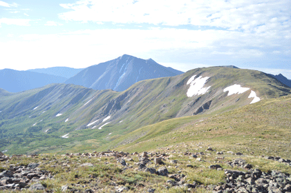
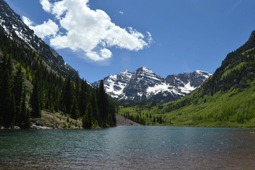

PROJECT GOALS
This virtual reality will develop a meditative therapy experience to reduce general anxiety and stress. The player will be placed in a natural environment with mountains and water. A heavy importance will be placed on sound design and visuals to fully immerse the player into a different world. While developing this project, there will be three key steps. Selecting a targeted area, learning new softwares, and developing the experience.
In order to decide on a targeted area of therapy for this project, I will research the treatments and conditions in which VR would be beneficial for and previous studies that have been conducted using similar treatment methods. Learning new softwares is an important step to this project, many of the programs used for game development are difficult but vital to the gamming and animation industry. Throughout the summer 2020 I will become and expereinced user in many of these important softwares. With the two previous steps completed, I will be able to develop a virtual reality experience that can provide a positive experience for any player who would like to reduce general stress and anxiety.
Inspiration
For this experience I am developing an environment that includes a mountain range that surrounds a small body of water. Some inspiration for this setting comes from Maroon Bell's, Colorado. The player will be able to walk freely around this environment and explore. As the player explores, there will be changing sounds to suit the environment. Over Summer 2020, I captured reference images to not only help with concept design but also to use as textures for my assets, ensuring they will look as accurate as possible. While my passion for hiking and nature inspired the visuals for this project, my history of studying biofeedback therapy motivated me to use my animation major to learn and create new forms of therapy treatments.
 Project Timeline
- Research and decide on an area to focus the VR experience on.
- Learn the softwares needed to create an immersive VR game, and begin asset creation
- Focus on asset creation and gathering textures/materials for each asset.
- Learn particle simulations for clouds and water effects.
- Import assets into Unreal Game Engine to ensure that they funciton properly.
- Begin to assemble the terrain with materials and lighting.
- Leave room for fixing any assets that are not funcitoning correctly.
- Make the game playable: begin programming the game and testing the VR headset to make sure it is functioning.
- Develop sound design to go with the VR environment
- Present the game!